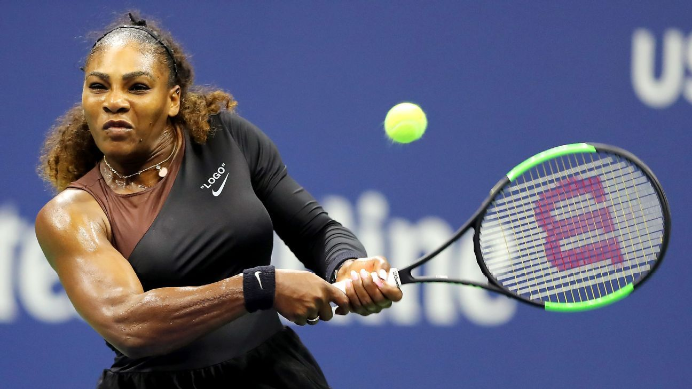
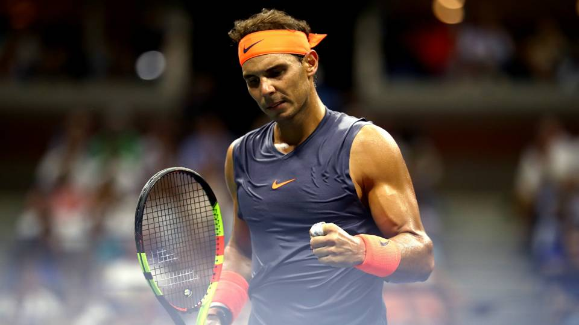
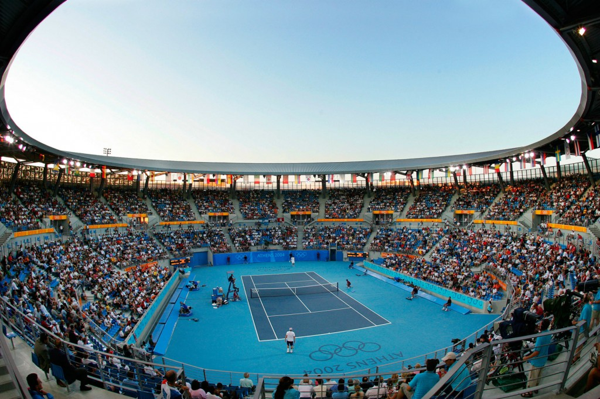

#tennis
10 posts

♥ likes

Above: Serena Williams playing in the Wimbledon Tournament, a tournament for the greatest tennis players in the world.

Above: Rafael Nadal reaches the semi-finals in a tournament after defeating Dominic Thiem(2018).
(Click here for full article)

Above: A sold out Olympic stadium in Athens, Greece(2008)
(Click here for full article)
Back to Home